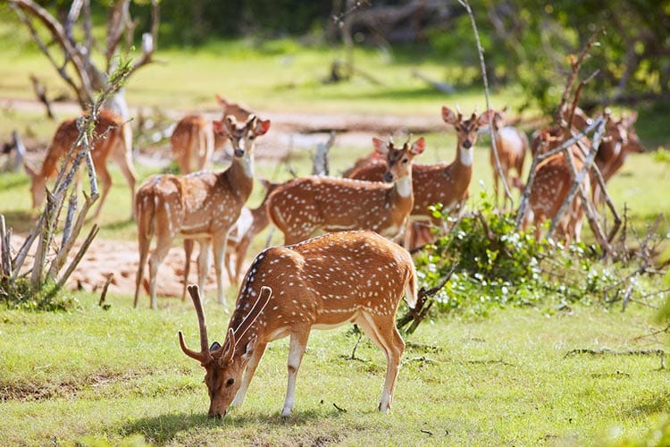
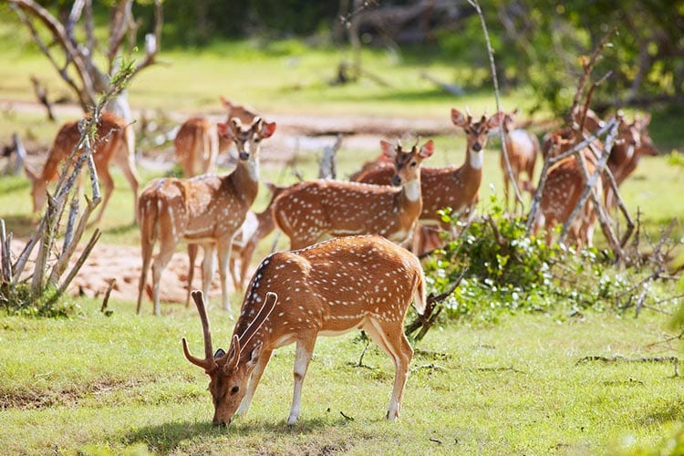

Sri Lanka has a history that dates back over 2,550 years. Sri Lanka is known by many different names such as Ceylon, Serendip Sinhaldvip, Taprobana, Tamraparni, Eelam, and Pearl of the Indian Ocean. Sri Lanka's kingdoms include Yapahuwa, Dambadeniyam, Kandy, Jaffna Kingdoms, and Gampola. Sri Lanka is well-known throughout the world for its natural beauty. This natural beauty offers stunning waterfalls, sandy beaches, tea plantations, and natural beaches. With the government's assistance, Sri Lanka focused on the tourism business in the 1960s.
Sri Lanka's tourism sector is expanding. Sri Lanka offers several attractive hotels, resorts, and spas that draw many foreign investors and tourists. Many travelers are drawn to this site because of its cultural diversity, and they visit to make their tour unforgettable. The two primary rainy seasons in Sri Lanka are the North-East monsoon, which affects the east coast, and the South-West monsoon, which affects the west and south. As a result, you can enjoy wet seasons while visiting various locations.
Furthermore, the country includes fascinating spots that are rich in natural, cultural, and historical sites that are ideal for a journey. Sri Lanka is well-known among travelers for its natural beauty and diversity. The tourist industry is important to the Sri Lankan economy and contributes significantly to the country's Economy. Most visitors come to Sri Lanka for a break from their hectic lives and to unwind.


 
